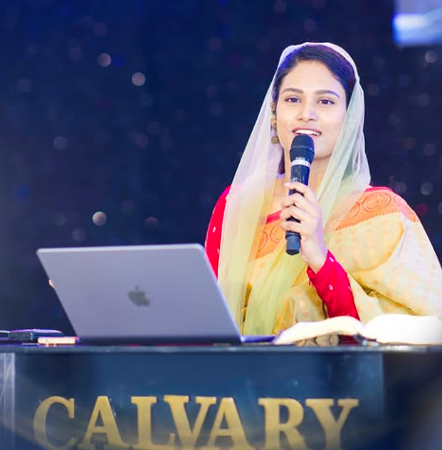

EXPERIENCE GOD'S LOVE & POWER
Welcome to a vibrant fellowship founded on faith, devoted to sound biblical truth, and passionate about worship. Led by Pastor N. Michael Paul and Sis. Sami Symphony Paul.
COUNTDOWN TO VIJAYAWADA SERVICE
MEET OUR PASTORS
Faithfully proclaiming the uncompromised Word of God with love, authority, and pastoral care across Vijayawada and Guntur.
Pastor N Michael Paul
Pastor N. Michael Paul is the second son of Dr. N. Jayapaul. A visionary leader, dynamic preacher, and shepherd dedicated to preaching the sound gospel of grace. He leads both our Vijayawada and Guntur churches with sound doctrine and a heart for revival.

Sis. Sami Symphony Paul
Sis. Sami Symphony Paul serves alongside her husband in leading our church family. An anointed worship leader and compassionate counselor, she directs worship services, leads women's gatherings, and inspires deep spiritual intimacy with God.
FEATURED SERMONS & MESSAGES
Watch powerful Telugu sermons and messages from Pastor N. Michael Paul's YouTube ministry.
 1:52:14
1:52:14
#SundayService | 20 Sep 2026 | The Calvary Church Vijayawada
 1:34:20
1:34:20
 New
Release
New
Release
 2:04:30
2:04:30
#sundayservice | Holy Communion | The Calvary Church Vijayawada
 8:20
8:20
HOLY COMMUNION SERVICE
Every First Sunday of the month, we partake in Holy Communion in remembrance of Christ's sacrifice.


UPCOMING CHURCH EVENTS
Mark your calendar and join us in worship. Export any event directly to your Google Calendar or device calendar.
Sunday Morning Celebration
Early Dawn Sunday Service
Monthly Holy Communion
21 Days Fasting & Prayer
CHURCH MINISTRIES
Explore the various ministry arms through which God transforms lives, fosters spiritual growth, and blesses our community.
"God is spirit, and those who worship Him must worship in spirit and truth." — John 4:24
Anointed music, choral worship, and congregational singing designed to lead believers into the holy presence of God.
"Strength and honor are her clothing; she shall rejoice in time to come." — Proverbs 31:25
Empowering sisters through prayer, discipleship, mutual encouragement, and compassionate community outreach.
"Let no one despise your youth, but be an example to the believers in word and conduct." — 1 Tim 4:12
Inspiring teens and young adults to live purposefully for Jesus Christ, grounded in biblical convictions.
"Train up a child in the way he should go, and when he is old he will not depart." — Prov 22:6
Nurturing faith in our youngest members through creative Bible stories, memory verses, and joyful songs.
SUNDAY SERVICES & LOCATIONS
We welcome you and your family to worship with us at either of our active branches in Vijayawada or Guntur.
SWARNAS CONVENTION
Gurunanak Colony Main Road,
Infront of Donbosco High School,
Vijayawada, Andhra Pradesh.

THE CALVARY CHURCH
Vidyanagar 1st Line Extension,
New RTO Office Road, Near Aaditri Apartments,
Guntur, Andhra Pradesh.

SEND YOUR PRAYER REQUEST
"The effective, fervent prayer of a righteous man avails much." — James 5:16.
Share your burden or testimony; our pastoral team and prayer warriors will pray for you.
Church Office & Helplines
Swarnas Convention, Gurunanak Colony Main Rd, Infront of Donbosco School, Vijayawada.
The Calvary Church, Vidyanagar 1st Line Extension, New RTO Office Road, Guntur.
FOLLOW OUR DIGITAL MINISTRY
Receive daily encouragement, livestreams, short devotionals, and church announcements across all official social channels.
Pastor N Michael Paul
Lead Pastor & Global InfluencerSis. Sami Symphony Paul
Co-Pastor & Worship Leader